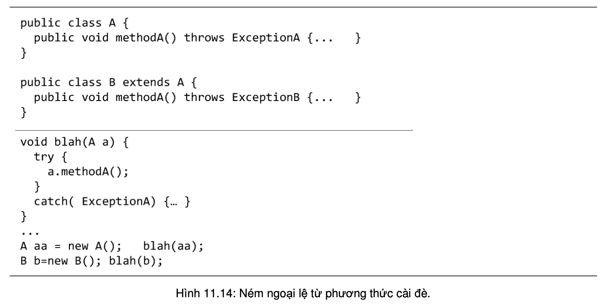

11.7. NGOẠI LỆ VÀ CÁC PHƯƠNG THỨC CÀI ĐÈ
Giả sử ta viết một lớp con và cài đè một phương thức của lớp cha. Có những ràng buộc gì về việc ném ngoại lệ từ trong phương thức của lớp con?
Ta nhớ lại nguyên lý "Các đối tượng thuộc lớp con có thể được đối xử như thể chúng là các đối tượng thuộc lớp cha". Nói cách khác, đoạn mã nào chạy được với một lớp cha cũng phải chạy được với bất kì lớp nào được dẫn xuất từ lớp đó. Đặt trong ngữ cảnh cụ thể hơn của lời gọi phương thức từ tham chiếu tới lớp cha, ta có quy tắc rằng phương thức cài đè chỉ được ném các kiểu ngoại lệ đã được khai báo tại phiên bản của lớp cha, hoặc ngoại lệ thuộc các lớp con của các kiểu nói trên, hoặc không ném ngoại lệ nào.

Những điểm quan trọng:
- Một phương thức có thể ném ngoại lệ khi gặp sự cố trong khi đang chạy
- Một ngoại lệ là một đối tượng thuộc kiểu Exception hoặc lớp con của Exception.
- Trình biên dịch không quan tâm đến các ngoại lệ kiểu RuntimeException. Các ngoại lệ kiểu RuntimeException không bắt buộc phải được phương thức xử lý bằng khối try/catch hay khai báo throws để né.
- Tất cả các loại ngoại lệ mà trình biên dịch quan tâm được gọi là các ngoại lệ được kiểm tra. Các ngoại lệ còn lại (các loại RuntimeException) được gọi là ngoại lệ không được kiểm tra.
- Một phương thức ném một ngoại lệ bằng lệnh throw, tiếp theo là một đối tượng ngoại lệ mới.
- Các phương thức có thể ném một ngoại lệ loại được kiểm tra phải khai báo ngoại lệ đó với dạng throws Exception
- Nếu một phương thức của ta gọi một phương thức có ném ngoại lệ loại được kiểm tra, phương thức đó phải đảm bảo rằng ngoại lệ đó được quan tâm xử lý.
- Nếu muốn xử lý ngoại lệ phát sinh từ một đoạn mã, ta bọc đoạn mã đó vào trong một khối try/catch và đặt phần mã xử lý ngoại lệ/khắc phục sự cố vào trong khối catch.
- Nếu không định xử lý ngoại lệ, ta có thể 'né' ngoại lệ bằng khai báo throws.
- Nếu một lớp con cài đè phương thức của lớp cha thì phiên bản của lớp con chỉ được ném các kiểu ngoại lệ đã được khai báo tại phiên bản của lớp cha, hoặc ngoại lệ thuộc các lớp con của các kiểu nói trên, hoặc không ném ngoại lệ nào.